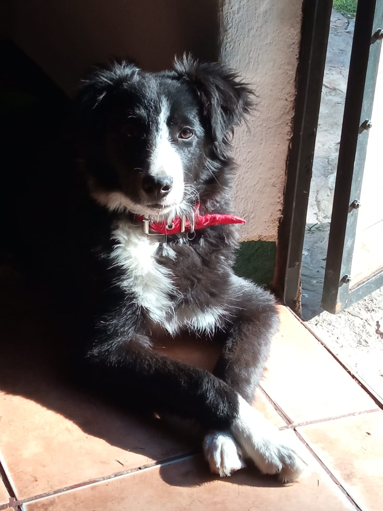
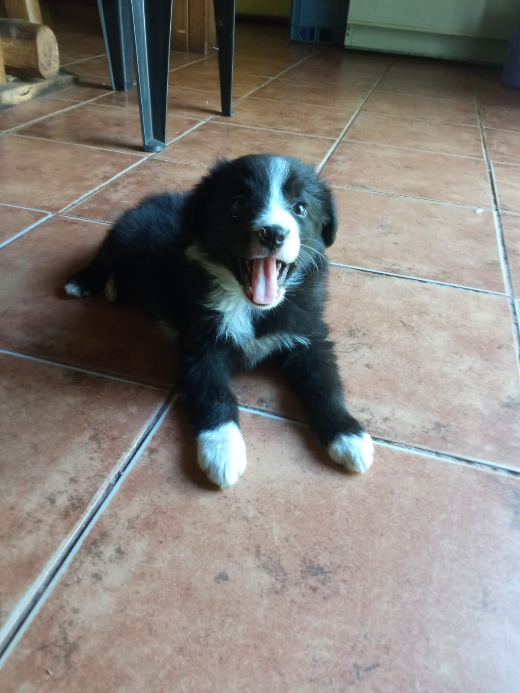
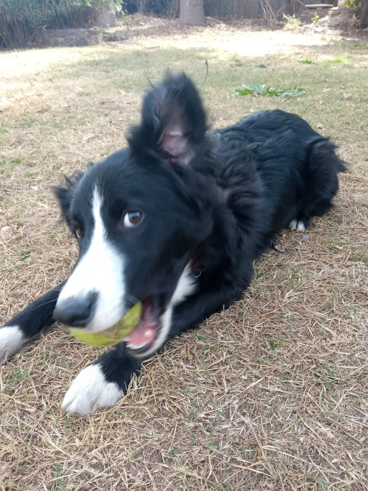

El border collie es una raza de perro de trabajo incluida dentro de la denominación Collie. La raza
surgió en la frontera entre Escocia e Inglaterra como perro pastor, sobre todo para trabajar con
rebaños
de ovejas. El border collie fue seleccionado sobre todo para enfatizar su inteligencia y su
obediencia;
debido a esto, son uno de los perros pastores más populares en la actualidad.
El border collie está considerado como un perro extremadamente inteligente, lleno de energía,
acrobático y atlético, y generalmente compite con gran éxito en concursos de pastoreo y otros
deportes
caninos. Son generalmente descritos como la raza de perro doméstico más inteligente.

El border collie es un perro pastor originario de la frontera entre Escocia e Inglaterra,
descendiente de
los collies autóctonos llevados por los celtas a las islas británicas. Su desarrollo continuó en las
Tierras Altas escocesas y en Northumberland, donde se empezó a criar sistemáticamente en el siglo
XIX.
El perro Old Hemp (1893-1901) es considerado el antepasado de todos los border collies puros,
debido
a su instinto excepcional para el pastoreo. Su estilo característico influyó en la raza, y muchos
perros
actuales descienden de él.
El nombre "border collie" fue introducido en 1915 por James Reid para diferenciarlo de otros
collies. A diferencia de estos, el border collie mantuvo su función como perro de trabajo. Otros
perros
clave en la historia de la raza son Winston Cap (1963), que estableció el estándar moderno, y
Hindhope
Jed (1895), que contribuyó a la expansión de la raza en Nueva Zelanda y Australia.

Los border collies son muy inteligentes. Según la clasificación realizada por Stanley Coren, después
de
analizar las respuestas de más de doscientos jueces de trabajo del AKC (La fabulosa inteligencia de
los
perros, Stanley Coren, Ediciones B, 1995), está considerada como la raza más inteligente de perro.
Comprenden nuevas órdenes con menos de cinco repeticiones y obedecen a la primera orden el 95 % de
las
veces o más.
La agility es un deporte abierto a todas aquellas personas que dispongan de uno o más perros
(sea
cual sea su raza, con o sin pedigrí). Consiste en que los perros, conducidos por sus guías, sean
capaces
de superar una serie de obstáculos con el fin de poner en evidencia su inteligencia, obediencia,
concentración, sociabilidad y su agilidad.
